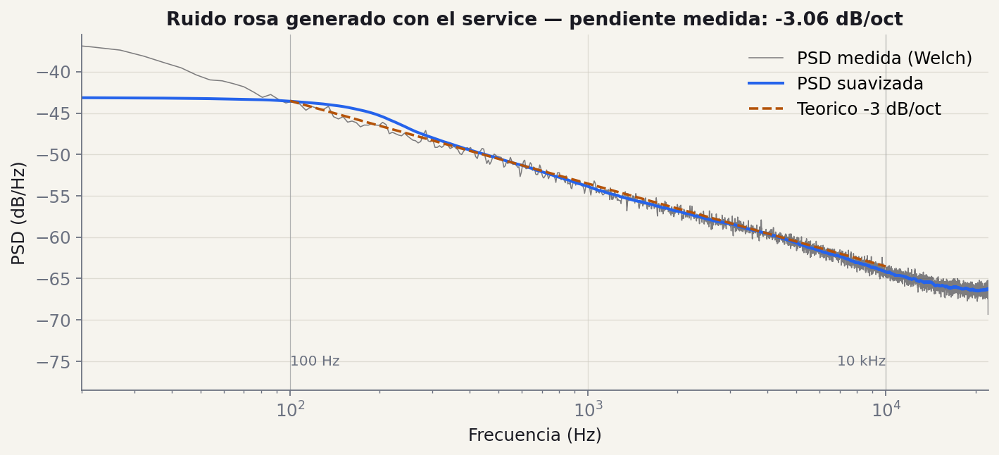
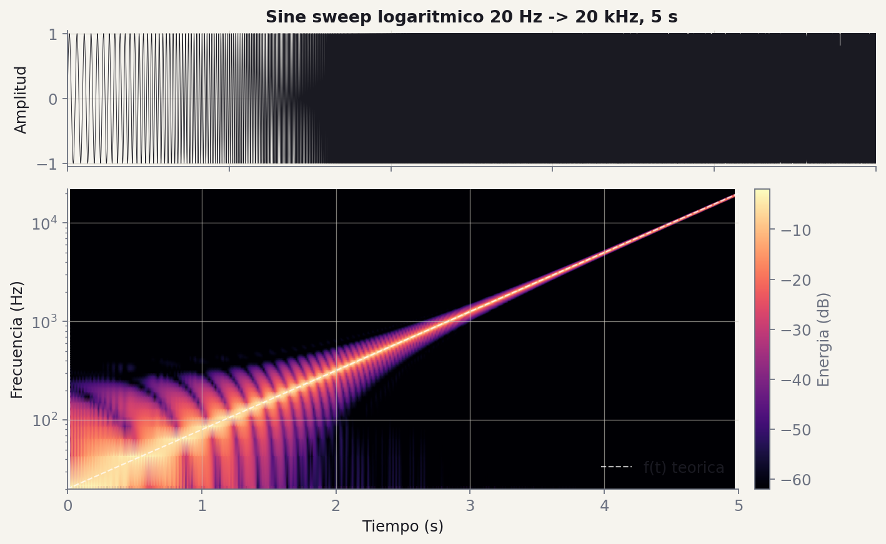
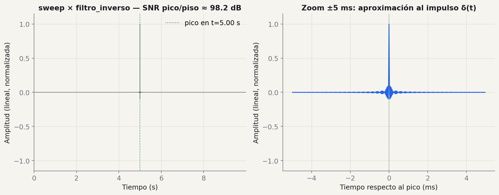

01/03 · función
generar_ruido_rosa
Ruido rosa.
in
duracion · float · segundos
fs · int · Hz
out
np.ndarray · normalizado en [-1, 1]
Las tres señales que excitan la sala — y los tests que las validan.
Pasamos del plano al primer código que calcula. Esto es lo que va a usar el resto del TP.
| Milestone | Entregan | Fecha | Peso |
|---|---|---|---|
| M0 El Plano | Arquitectura · repo · issues | 28 Abr | 5% |
| M1 Generación | Ruido rosa · sine sweep · playrec | 19 May — hoy | 15% |
| M2 Procesamiento | Filtros · deconvolución · RI | 16 Jun | 20% |
| M3 Producto | API REST · informe · demo | 7 Jul | 30% |
main, después del último PR mergeadogit checkout main && git pull origin main # estar al día con el remote
git tag -a v0.1.0 -m "M1: ruido rosa, sine sweep, playrec" # tag anotado
git push origin v0.1.0 # empujar SOLO ese tag al remote
-a = tag anotado (con autor, fecha y mensaje). Sin -a es un tag liviano y no queda quién lo hizo. Si no está el tag empujado al remote, oficialmente no entregaron.
En M0 dibujaron las tres capas. En M1 le ponen código real a una sola
de ellas: services/.
Los routers no se tocan todavía. Los schemas tampoco. Solo:
services/pink_noise.pyservices/sine_sweep.pyservices/audio_io.py (reproducir/grabar)
Cada uno es una función pura de DSP: entra numpy, sale numpy.
No saben de HTTP. No saben de JSON. No saben de FastAPI.
Regla: el service no abre archivos, no llama a la red, no imprime. Recibe arrays, devuelve arrays.
Spec completa en trabajo_practico/especificacion/m1_generacion.md · cambian la firma y los tests dejan de pasar.

El ruido rosa (también llamado ruido $1/f$) se caracteriza por tener una densidad espectral de potencia inversamente proporcional a la frecuencia: $S(f) = k/f$, donde $k$ es una constante. En escala logarítmica esto corresponde a una caída de -3 dB/octava (o equivalentemente, -10 dB/década), porque $\Delta L = 10 \log_{10}(1/2) \approx -3{,}01$ dB.
Algoritmo recomendado Voss-McCartney: suma de múltiples generadores de ruido blanco que se actualizan a tasas $2^i$. El generador $i$ se actualiza cuando el bit $i$ del índice $n$ cambia. La suma produce una señal cuyo espectro se aproxima a $1/f$. Alternativa aceptable: ruido blanco filtrado en frecuencia con $H(f) = 1/\sqrt{f}$.
Spec · m1_generacion.md §1 — Voss, R. F. & Clarke, J. (1978). "1/f noise" in music. JASA 63(1).

El sine sweep logarítmico (también llamado exponencial) se define como: $\;x(t) = \sin\!\left[\tfrac{2\pi f_1 T}{\ln(f_2/f_1)}\!\left(e^{t \ln(f_2/f_1)/T} - 1\right)\right]$, con $f_1$ frecuencia inicial, $f_2$ final, $T$ duración total, $0 \leq t \leq T$.
La frecuencia instantánea es $f(t) = f_1 \cdot e^{t \ln(f_2/f_1)/T}$, que crece exponencialmente de $f_1$ a $f_2$. Logarítmico (no lineal) porque buscamos igual energía por octava — coincide con la escala de los filtros de bandas IEC 61260 que van a usar en M2.
Spec · m1_generacion.md §2 — Farina, A. (2000). Simultaneous measurement of impulse response and distortion with a swept-sine technique. 108th AES Convention.

El filtro inverso se obtiene invirtiendo temporalmente el sweep y aplicando una corrección de amplitud que compensa la distribución no uniforme de energía por frecuencia del sweep logarítmico: $\;x_{\text{inv}}(t) = x(T - t) / A(t)$, con envolvente $A(t) = e^{-t \ln(f_2/f_1)/T}$.
La corrección es necesaria porque el sweep logarítmico permanece más tiempo en las frecuencias bajas y concentra más energía allí. El filtro inverso compensa atenuando esa banda. La convolución del sweep con su filtro inverso debe producir un impulso ideal: $\;x(t) * x_{\text{inv}}(t) \approx \delta(t)$. En la práctica, un pulso estrecho con lóbulos laterales pequeños.
Spec · m1_generacion.md §2 (filtro inverso) — esto es lo que en M2 usan para deconvolucionar la respuesta al impulso de la sala.
sounddeviceimport sounddevice as sd
recorded = sd.playrec(signal, samplerate=fs, channels=1, blocking=True)
sd.wait()Hace play + record a la vez sobre el mismo dispositivo, muestra contra muestra. Documenten en el README la config: dispositivo, canales, fs, buffer size.
sd.playrec() no existe en el browser. La analogía es la Web Audio API:
navigator.mediaDevices.getUserMedia({audio: {sampleRate: {ideal: fs}}}) — permiso + micrófononew AudioContext({sampleRate}) + AudioBufferSourceNode — reproduce la señal de excitaciónnew MediaRecorder(stream, {mimeType: 'audio/webm;codecs=opus'}) — captura el streamOfflineAudioContext antes de subir al backendsetSinkId() para elegir salida cuando hay múltiples dispositivosMismos cuidados: sample rate explícito, manejo de permisos denegados, latencia entre play y record (acá la introduce el browser, no el driver de audio). Grabar en mono para no duplicar el tamaño del archivo subido al backend.
El contrato de M1 son los tests. Si pasan, hay nota base. Si no pasan, no.
Welch → pendiente entre 100 Hz y 10 kHz.
Criterio: dentro de -3 ± 1 dB/oct.
Espectrograma → energía en $f_1$ y $f_2$.
Criterio: frecuencia instantánea monótona creciente.
fftconvolve(sweep, inv) → pico.
Criterio: pico ≥ 40 dB sobre la media del resto.
Acepta 1D y 2D · duración correcta ± 1% · error informativo si no hay device.
Tip: mock del dispositivo para CI.
Además de los tests automatizados, cada grupo entrega evidencia visual:
Capturas o PNGs van en docs/m1/ del repo.
Comparen contra los plots que mostramos hoy (slides 5, 6, 7). Las pendientes y SNRs deberían estar en el mismo orden.
Si su resultado se ve muy distinto a las imágenes de cátedra, hay un bug — empiecen por ahí.
Patrones aplicados en la API de cátedra. No los pide la rúbrica — pero les ahorran trabajo en M2 y M3.
Junto al audio_data, devolver file_path, sample_rate,
num_samples, max_amplitude. Mismo dict se serializa como JSON en M3 sin retrabajo.
signal = signal / max(|signal|) * 0.9
Deja headroom para evitar clipping al guardar WAV o reproducir. Multiplicar por 1.0 y rezar no es estrategia.
Si usan scipy.signal.lfilter, generar N + nt60 muestras y tirar las primeras nt60.
Si no, los primeros milisegundos están sucios.
pink_noise.py genera. signal_utils.py grafica. Funciones distintas, archivos distintos.
Si mañana cambian el plot, no rompen el generador.
output_path opcional
Default a tempfile, no al cwd del que llama. Tests no ensucian el repo; M3 puede generar WAV efímeros para la response.
Voss-McCartney y filtro IIR son ambos válidos. El test es el contrato — no la implementación. Esto les da margen de optimizar después sin romper nada.
tests/ que pasen al correr pytest -vmain vía PR con review de otro integrantev0.1.0 anotado y empujado al remote# desde la raiz del repo
uv sync # asegurar dependencias instaladas
uv run pytest -v # correr todos los tests con output verboso
uv run pytest -v tests/test_pink.py # correr solo un archivo
uv run pytest -v -k "ruido_rosa" # correr tests que matchean el nombre
-v (verbose) muestra cada test con su nombre y si pasó; sin -v solo ven puntos. -k filtra tests por substring del nombre — útil para correr solo lo que estás tocando. Si un test falla, pytest --pdb abre el debugger en el punto exacto de la falla, y pytest -x detiene la corrida en el primer fallo.
Lo que tiene que estar antes de presentar.
generar_ruido_rosa con test pasandogenerar_sine_sweep + filtro inverso con tests pasandoreproducir_y_grabar con test de formadocs/m1/pytest -v en verde — los 4 tests requeridosmainv0.1.0 anotado y empujado al remoteOcho checks. Si están, presentan tranquilos.
trabajo_practico/especificacion/m1_generacion.mdtrabajo_practico/rubrica.mdPróxima clase: frecuencia y filtros · puerta de entrada a M2.